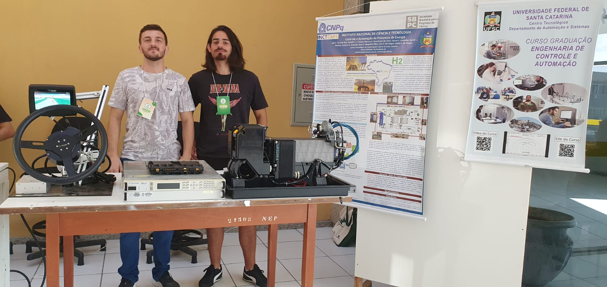
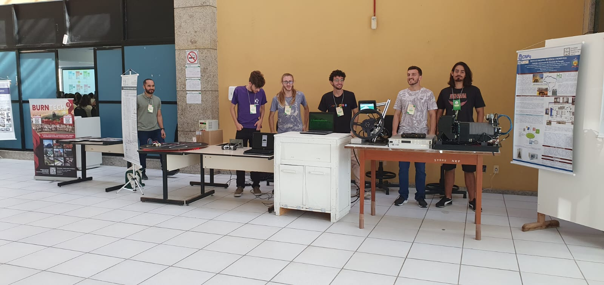

Participação do INCT CAPE no ENSUS 2023
Entre 05 a 07 de Junho de 2023, o INCT CAPE participou do XI Encontro de Sustentabilidade em Projeto (ENSUS), na Universidade Federal de Santa Catarina, em Florianópolis. O estande do Instituto foi organizado pelos professores Julio Elias Normey-Rico e Marcus Vinícius Americano da Costa, e composto pelos alunos de iniciação científica Amir Naspolini, Luiz Gustavo Dal Magro e Pedro Vargas.
O ENSUS reuniu técnicos, alunos e a comunidade com o objetivo de apresentar projetos nas áreas de Arquitetura, Engenharia e Design que integram sustentabilidade e desenvolvimento de novos produtos. "A participação no ENSUS foi extremamente gratificante, pois durante o período de exposição pudemos apresentar os trabalhos que estamos desenvolvendo, dessa maneira conseguindo demonstrar a relevância do mesmo para a caminhada a um futuro mais sustentável com a utilização de energias provenientes de fontes renováveis. Outro ponto positivo foi a interação com outros participantes e expositores, embora o movimento do público não tenha sido tão grande assim. Também pudemos conhecer outros projetos voltados para a sustentabilidade, os quais agregaram positivamente e construtivamente, demonstrando a necessidade de fomentar o conhecimento e a conscientização sobre sustentabilidade", comentou o aluno de iniciação científica Luiz Gustavo.
Mais informações estão disponíveis no site do evento https://ensus2023.paginas.ufsc.br/.
 